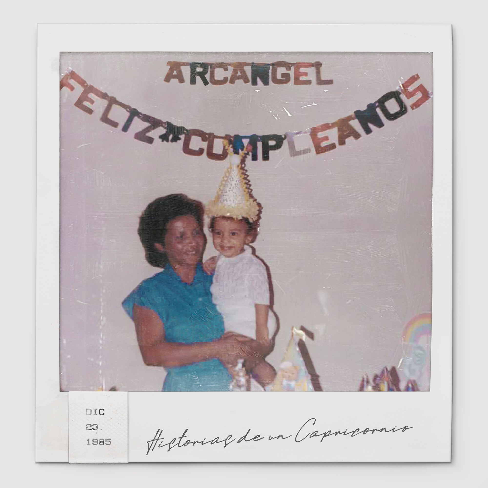
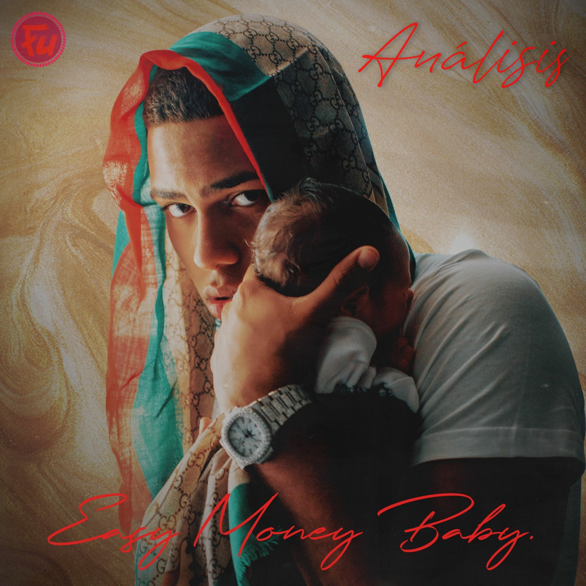
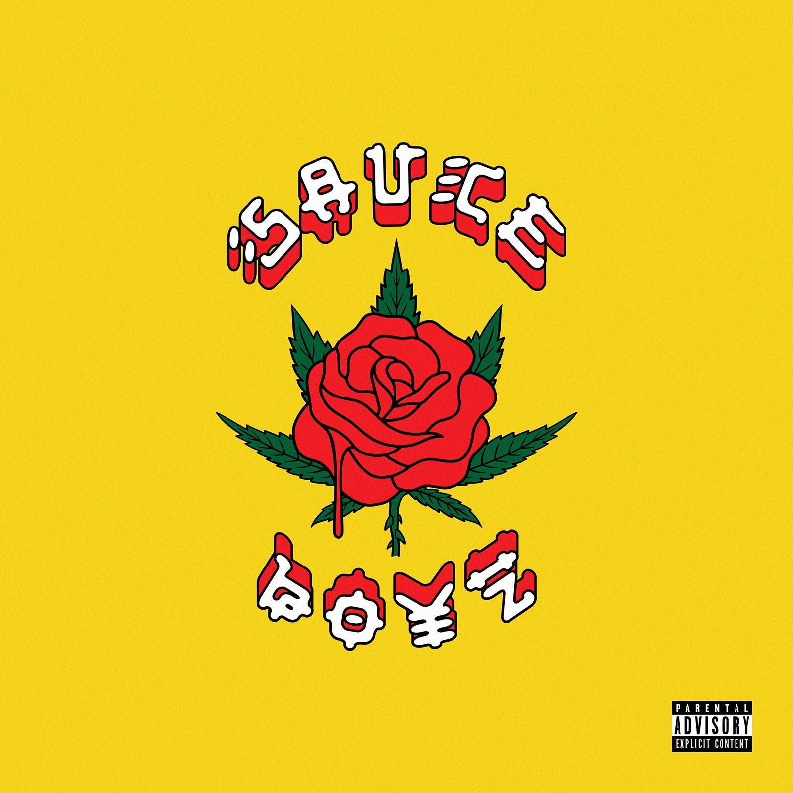
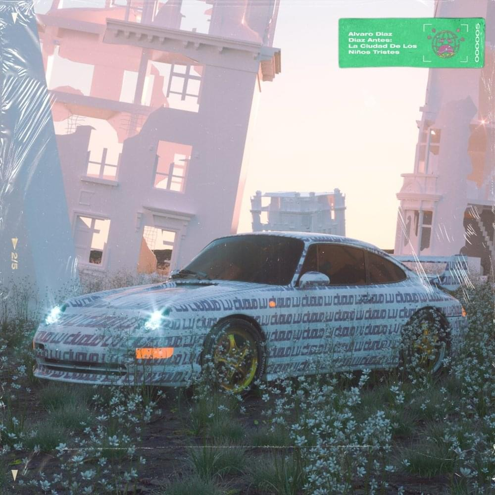

Esta es una de las pocas ideas para escribir que no se me ha olvidado milagrosamente, así que en vez de pensarlo mucho, vamos a empezar a plasmarlo antes de que se esfume.
Han salido varios proyectos en los 2 primeros meses del 2020, absteniéndome a escuchar solo uno de ello (Circles de Mac Miller). Mientras tanto, estos 4 discos se han quedado en mi rotación y ya me siento a pleno para dar mi vista sobre ellos:
Historias de un Capricornio - Arcángel
Ares fue la última entrega del boricua, que si vamos a ser completamente sinceros, fue el lanzamiento más débil y menos relevante en su extensa y legendaria carrera. Muy poco salió de ese disco a destacar más que un par de sencillos exitosos, y aunque el proyecto estuviese lejos de ser mediocre o deficiente, simplemente no tuvo peso en la industria durante su nacimiento.
Este disco es otra historia. Todo lo contrario a su antecesor, Historias de un Capricornio es una vuelta al eje del reggaetón y una faceta mucho más renovada de Arcángel; lo que más me parece curioso de esto es el hecho de haberlo conseguido volviendo a sus raíces, menos trap/dance-hall genérico y más perreo del de antes. Sin duda esta es la línea que siempre ha dominado.
Temas como Te Esperaré y Ponte Bonita suenan casi idéntico al artista de que estaba rompiendo las discotecas con sus temas más memorables. Mientras que escuchamos una faceta más refinada en Al Volante, Hábitos, incluso en su facha de malianteo' podemos hacer énfasis en lo fresco que se lo oye al recitar sus versos (No Salgo de Casa, Invicto).
Volviendo a como su fórmula de trap/dance-hall en Ares no funcionó, Austin redujo cantidad y aumentó calidad: la manera en que refinó su sonido en estas áreas terminó dándole frutos con dos palos: Infeliz y Memoria Rota, probando que con un mejor enfoque se consiguen mejores resultados.
Además, sumemos el hecho de que la producción subió un nivel a su vez, y eso por supuesto da a relucir más aun cada característica del disco, hablar de los autores tras los instrumentales de la mayoría del disco es hablar de la élite del reggaetón (Tainy, Mambo Kingz, The Rudeboys, ICON Music, etc.). Entre los invitados al album, todos cumplen su rol de añadir aun más talento a los tracks, pero el protagonista y estrella sigue siendo La Maravilla. Quizá la actuación más débil es la de Ozuna, pero tiene potencial para crecer conforme avance el tiempo.
Mis favoritas: Al Volante, Hábitos, Memoria Rota, Te Esperaré.
Easy Money Baby - Myke Towers
Aunque no es el primer disco en la carrera de Myke, la verdad es que nunca me interesó mucho su sonido durante sus inicios, quizá algún día la revise pero por ahora lo que está logrando es con lo que me conformo. Probablemente es y siga siendo el invitado más buscado de la nueva escuela del reggaetón después de Sech, pues dudo que alguien tenga siquiera la mitad de colaboraciones que el pudo lograr los últimos 12 meses.
En su considerado verdadero debut, hay que apreciar el hecho de que fuera de Farruko en Si Se Da, Towers se lanzó un tiro al piso al no traer ningún otro invitado a su proyecto: muy arriesgado pero admirable. Y los resultados de esta apuesta son mixtos a mis oídos. Si bien, Myke Towers es un artista muy versátil con líricas que van más allá del esquema básico, a menos que seas un fanático a morir de su voz o su forma de hacer música, eventualmente vas a necesitar un descanso de los 18 temas que presenta.
El boricua lanza todo su arsenal a través de los 55 minutos de duración del disco, acertando un par, y errando en otro. MIB es un excelente inicio: directo, sin anestesia y líricas exactas, pero seguidamente Tú y Parcerita no me añadieron nada de substancia o alguna razón para volver a reproducirlas. Una Noche Más es muy interesante gracias al ritmo del beat, pero es un hit or miss el 100% del tiempo.
Desde la quinta canción hasta la décimo cuarta, nos encontramos la columna vertebral del disco: lo mejor lo vas a encontrar en este tramo, y aunque no todas son palos, cada una tiene algo para destacar: Girl es una canción que a primera instancia no me convenció el uso del sample (que quedé loco por cierto, estoy seguro que barato no le salió el permiso para usarlo), pero luego creció un poco en mi gusto. Al contrario, Viral y Diosa, me gustaron mucho durante la primera impresión, pero luego de par de reproducciones más, o me disgustan o no les duró el hype.
Hablando de lo más positivo: Fugaz, LVCC y Hechizo son palos durísimos, pienso que la mejor versión de Myke y personalmente, todo su potencial lo veo ilustrado en tales temas. Ejecución con la voz, líricas y flow excelentes. Y por supuesto, sus sencillos más populares también son un highlight. El final del disco es bastante olvidable, por lo tanto me abstendré de mencionarlo.
Para ser la primera entrega de peso por parte del artista de 26 años, lo veo más positivo que negativo, sin embargo no podría llegar a decir que es un proyecto sólido.
Mis favoritas: MIB, Fugaz, Hechizo, Piensan.
Sauce Boyz - Eladio Carrión
Voy a ir directo al grano: ni por la mente me pasó la existencia de un disco de Eladio para empezar el año, pero la verdadera sorpresa que me llevé es lo bueno que terminó siendo. Conocido como un trapero de los pesados, era complicado para mi verlo cumpliendo con un proyecto de larga duración bajo mis estándares, y me alegra mucho haber estado equivocado.
El tono tan grave de la voz de Eladio funciona perfectamente para un banger malandro (Rápido) así como para una dance-hall basado en puro despecho (3 Am), me voló la cabeza el hecho de que sea capaz de hacer un coro tan pegajoso y melódico (aunque sea con pequeñas ayudas en el estudio). Algo innegable es que el proyecto esta cargado hasta las metras con invitados, todos nombres importantes en la industria latina (J Balvin, Arcángel, Ñengo Flow, Miky Woodz, y más) tanto del norte del continente (Smokepurp, Lil' Mosey).
Y aquí podemos encontrar una de las pocas fallas del disco y el área que más necesita de mejorar para que Carrión suba de estrato como artista: los tracks en solitario. Coroné y Ponte Linda son lejos los temas menos elaborados o interesantes de la lista. Vida Buena es bastante agradable como abreboca del disco, su posicionamiento definitivamente ayudó a que dejara mejor impresión que las anteriores mencionadas.
Lo sólido Sauce Boyz se basa en la buena química entre los integrantes de cada canción y la precisión de los instrumentales con los mismos. Mi Error Remix es un giro de 180 grados sobre la canción original y es un himno que perdurará bastante tiempo en mis reproducciones, personalmente. Actriz el único reggaetón puro del proyecto es una joya, Arcángel complementa perfectamente con un coro y verso de su mejor versión; y destaco la voz de Eladio, lejos, su mejor actuación cantando.
Si bien, el género principal es el trap, las diferentes presentaciones en las que fue materializado no se sienten repetitivas en ningún momento (quizá solo los tracks solitarios de Eladio): Rápido es un banger cabilla (los versos de Noriel y Jon Z, arrechísimos), Huh? es el fronteo más californiano que ha pisado el sur de América, y Hennessy es un ritmo mucho más tranquilo/chill que cualquier otro entre los 15 temas restantes, y la voz de Cazzu y Cosculluela le dan el encanto para que destaque.
Verdaderamente, puedo seguir sacando características de cada canción, pero tampoco quiero arruinarles todo el proyecto con mis percepciones. El concepto del disco no es nada revolucionario ni complicado, es una fórmula muy frecuente en tendencias actuales del mercado musical, pero ejecutado de excelente manera y al mejor estilo para darle a conocer al mundo en definitiva, el sonido de Eladio Carrión.
Aunque su fuerte sea el trap de pura cepa y lo deja más que claro con sus versos (Kemba Walker, Mala Mía), es capaz de ser un punto fuerte en una canción de R&B (Lluvia Remix), lanzarse un buen perreo, contribuir a los despechos de uno, y más. La versatilidad de Eladio reluce y deja huella en la industria.
Mis favoritas: 3 Am, Mala Mía, Mi Error Remix, Actriz, Kemba Walker, Lluvia Remix.
Diaz Antes: La Ciudad de los Niños Tristes - Alvaro Diaz
La portada del disco se me hacía conocida desde el pequeño retrato del disco al verlo por primera vez en Spotify, luego de que me apareciera en una de las radios creada por la aplicación. Y que suerte tuve de encontrarlo. Un fragmento de lo que será el próximo disco de Alvaro Diaz, que por lo que he estudiado, tendrá un concepto basado en diversas estaciones radiales, todas tematizadas con los distintos humores/moods del proyecto.
En esta versión, nos toca el lado más endeble y vulnerable del artista boricua, solo basta con adentrarse por primera vez en el abreboca El Último Baile (Mia 5): un sample con vibra meláncolica, guitarras celestiales de fondo y la voz de Kablito armonizando como un sueño hecho realidad. La letras de Alvarito hieren con toda intensidad al hablar de una relación que marcó su vida para siempre, con la mujer que quizá sea la musa tras sus canciones de desamor y el resto del EP. Una poesía entablada en la modernidad de la sociedad pero con el mismo dolor que ha traído desde el inicio de los tiempos. Cuando perdemos un amor que no podemos superar a causa de nuestros propios errores y esperaremos hasta el fin de nuestros días. Producción: 10, Interpretes: 10. Un tesoro de tema.
Seguidamente, el aura de tristeza quizá se levanta un poco pero la melancolía no se detiene. Reina Pepiada (de Venezuela pal mundo papá), toca el surrealismo y la fantasía con la instrumental que nos ofrece, desconozco quién hace las voces de fondo pero lo hace a la perfección, y Álvaro se viste de gala al lanzar las mejores rimas de su carrera (en mi opinión). No sólo eso, la forma en que recita tales poesías esta producida al más mínimo detalle con los efectos en su voz. De verdad crea una experiencia surrealista que me sacó de contexto la primera vez que pude escuchar la canción con toda mi atención. Si el anterior tema del proyecto nos explica lo marcado que esta relación dejó al autor, Reina Pepiada es una explicación del por qué esto sucede y las sensaciones de Álvaro hacia esta persona. Quiero saber quién fue la venezolana que dejó así a este pobre hombre, porque coño, qué bolas con el pana.
No Te Quiero Perder es quizá el dance-hall más frágil y sensible que he escuchado en mi vida, con un tono de despecho que te da ganas de mover la cabeza al ritmo del beat mientras te pegas al vidrio del carro pensando en un amor que nunca existió. Lo más impresionante es, que aunque su composición sea muy minimalista su peso y efecto sobre el oyente se hace sentir de forma bárbara. El órgano que protagoniza la melodía deja su huella tan profunda en conjunto con la voz de Álvaro envuelta en auto-tune. Sin necesitar dejar su sencillez, incluso en la letra de la canción es bastante simple, estos aspectos que quizá para algunos pueda restarle calidad, para mi es todo lo contrario, suman y hacen que el tema sea aun más emblemático. Hasta ahora Tainy, el encargado de la producción en la mayoría del EP, ha hecho un trabajo fenomenal.
Hablando de producción, el cuarto track del proyecto destaca por ello mismo, Gongolí (2012) tiene por lejos el instrumental más experimental y ambicioso: el uso de múltiples sintetizadores, y con las percusiones más diferentes que vas a escuchar entre las 5 canciones. Según entiendo esta canción es algo bastante esperado por los fanáticos de Alvaro, quién los tuvo esperando desde 2012 cuando por primera vez dio indicios de la creación del tema. Kyoshi Reyes hace el coro, representando el punto de más calma en toda la pieza, Diaz relata en sus versos el estima que posee por esta persona, con la que quiere envejecer y nunca tener lejos de su lado. La creatividad de la canción resalta y termina siendo la vibra más colorida y positiva del EP.
Hasta ahora Alvarito iba de 4/4 básicamente, pero no todo es perfecto en esta vida y con Marla Singer terminó su racha. Para ser breve porque no tengo mucho que decir sobre esto, es la canción más floja La Ciudad de los Niños Tristes, el exceso adrede de autotune, un ritmo como para irme a dormir, y se supone que tiene que ser una canción sobre las cosas sexuales que el autor quiere hacerle a su cotizada mujer, pero parece más filler que otra cosa. Supongo que esto hacen los panas artistas cuando la jeva intensa y que no les gusta tanto así les piden una canción.
Para cerrar, este es el segundo segmento que estará en el disco completo Diaz Antes, y hasta ahora es el más sólido (Wavy pa las Bbys es la primera parte, no ha conectado conmigo por el momento). Disfruté mucho de las emociones que puede causar un buen instrumental y un Alvaro Diaz inspirado en sus letras, no está nada mal tampoco ser bendecido con la presencia de Tainy quién probablemente sea el principal responsable de que el sonido de este EP destaque tanto y cree una atmósfera tan cautivadora. El mejor proyecto corto en lo que va de 2020, veremos si mantiene su puesto
Mis favoritas: El Ultimo Baile (Mia 5). Reina Pepiada, No Te Quiero Perder.